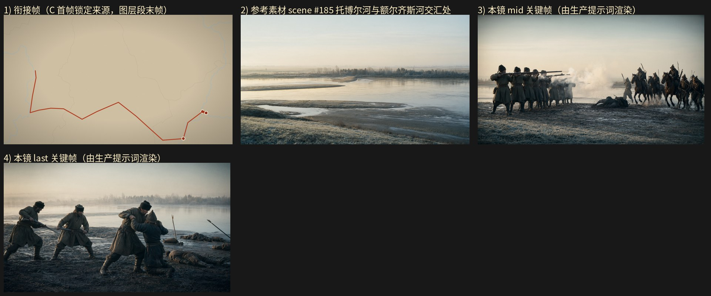

旁白：虽然小叶的远征队，在人数上远低于蒙古人，但他们的步枪横扫敌人的冷兵器。战斗异常惨烈，最后进行到肉搏的程度。
设计卡预算：layer 5.5 s + gen 9.5 s；mid_frame_time（OLD）5.5 s
NEW 原地重写：关键帧任务墙钟 30.0s / 3 次调用 / 峰值提示词 75059 tokens / 完成 1627 tokens；视频任务墙钟 45.1s / 3 次调用 / 峰值提示词 76311 tokens / 完成 2414 tokens；保存 成功
NEW-scratch：关键帧任务墙钟 40.0s / 3 次调用 / 峰值提示词 72422 tokens / 完成 1665 tokens；视频任务墙钟 35.0s / 3 次调用 / 峰值提示词 75004 tokens / 完成 2030 tokens；保存 成功

（空）
@托博尔河与额尔齐斯河交汇处，1582年10月清晨，薄雾贴着水面浮起，低角度淡金色晨光从画面左侧斜照，河滩泥地上泛着湿冷的光，草甸上的薄霜被踩成斑驳的暗痕，16:9 横构图电影感剧照。中景平视固定机位，取河滩正面交锋的一瞬：画面左侧是哥萨克队列，队列成排横向站定在河滩与草甸交界处，为首一排的哥萨克（粗呢长袍、黑色羊皮帽、腰束布带、及膝皮靴，共十余人）双腿分开站稳、两只皮靴踩在湿泥上清晰可见，各自双手端起一支火枪、枪托抵住右肩、枪管朝画外右侧的对岸方向举起，火枪侧面的火绳夹与横插在枪身中段的木质通条清楚可辨；一轮齐射的白烟横在整排队列前，浓白的硝烟从枪口喷出并向画面上方翻卷，烟层把队列的下身遮成半透的虚影。画面右侧的对岸方向，蒙古骑兵（尖顶毡帽、深色长袍、背弓，共七八骑）已冲近到河滩边缘，各自端坐马背、双手握着缰绳搁在鞍前，双腿垂在马腹两侧、双脚踩在马镫上，背上斜挎弓与箭囊，马匹四腿飞奔踏起泥水与水花，马头朝向画面左侧的哥萨克队列；骑兵身前与身侧另有执矛步卒（同样的尖顶毡帽、深色长袍，手持短矛，共五六人）双腿迈开踏在泥滩上、双手各握一根短矛的矛杆中段把矛压低朝向前方。画面中部偏右的地面上已有一名蒙古骑兵连人带马歪倒在泥水里，马身横斜、骑者侧身伏在泥地上，长矛掉落在旁。河滩上泥水四溅，硝烟与晨光在队列之间交错，人物、马匹与兵器全部完整入画，构图平稳清晰、层次分明。16:9 横构图电影感剧照，单帧静态画面
@托博尔河与额尔齐斯河交汇处，1582年10月清晨，晨光自画面左侧斜照，硝烟已散开成稀薄的灰白薄层挂在河面上，泥地被踩得湿烂泛出暗光，16:9 横构图电影感剧照。中景平视固定机位，取河滩泥地上的近身缠斗：画面中部与右侧是扭打成一片的人群，一名哥萨克（粗呢长袍、黑色羊皮帽、腰束布带）与一名蒙古步卒（尖顶毡帽、深色长袍）贴身相搏——哥萨克双腿分开站稳在泥水里、两只皮靴陷到脚踝，右手扣住对方肩头的衣料向内拽、左手抵住对方的胸口，蒙古步卒双腿前后错开半跪在泥地上、右手攥住哥萨克的袖口、左手抬起护住头侧，两人上身纠缠在一起；画面左侧另有两名哥萨克（同款粗呢长袍与羊皮帽）各自双腿分开踏在泥地上，一人双手握住一支火枪的枪管把枪托当作棍棒抡起、枪身横过身前，另一人右手攥着对方的短矛矛杆中段向怀中拽、左手垂在体侧；画面右后方的浅泥洼里斜插着两支倾倒的长矛与被踩扁的箭囊，几名倒下的人横在泥水里，衣袍被泥水浸透，身形侧卧或仰卧，四肢摊在泥面上。抬眼可见的河面浮着薄雾与冷光，泥地上脚印与水洼连成一片，晨光把湿泥照亮、暗部沉入青灰。画面中所有人都是无名的交战双方，衣着与持物区分，人物与兵器全部完整入画，构图平稳清晰、层次分明，可被下一镜直接承接。16:9 横构图电影感剧照，单帧静态画面
场景：@托博尔河与额尔齐斯河交汇处。 0-1秒：俯拍平面地图式画面，米黄底色上分布浅灰细线轮廓与浅蓝河流线，一条红色折线自左侧中部向下折转，横贯画面中部后向右下延伸，末端在右侧偏下位置折起，折线末端与转折处有数个白色圆点标记，光线均匀平坦、无明暗渐变，留白主要在上方与左侧，镜头静止，画面无人。 1-4秒：接在空镜之后，切到 @托博尔河与额尔齐斯河交汇处 的河滩正面交锋中景平视固定机位，画面左侧是哥萨克队列成排横向站定在河滩与草甸交界处，为首一排的哥萨克（粗呢长袍、黑色羊皮帽、腰束布带、及膝皮靴，共十余人）双腿分开站稳、两只皮靴踩在湿泥上清晰可见，各自双手端起一支火枪、枪托抵住右肩、枪管朝画外右侧的对岸方向举起，火枪侧面的火绳夹与横插在枪身中段的木质通条清楚可辨；一轮齐射的白烟横在整排队列前，浓白硝烟从枪口喷出向画面上方翻卷；画面上部是两条河相接的宽阔水面与浮着薄雾的对岸林带，下部是覆霜的枯草河滩与沙洲边缘。 4-7秒：@托博尔河与额尔齐斯河交汇处，切到对岸方向的中景平视固定机位，画面右侧的对岸草坡上蒙古骑兵（尖顶毡帽、深色长袍、背弓，共七八骑）已冲近到河滩边缘，各自端坐马背、双手握着缰绳搁在鞍前，双腿垂在马腹两侧、双脚踩在马镫上，背上斜挎弓与箭囊，马匹四腿飞奔踏起泥水与水花，马头朝向画面左侧的哥萨克队列；骑兵身前与身侧另有执矛步卒（同样的尖顶毡帽、深色长袍，手持短矛，共五六人）双腿迈开踏在泥滩上、双手各握一根短矛的矛杆中段把矛压低朝向前方；画面左侧的哥萨克队列（粗呢长袍、黑色羊皮帽，共十余人）仍在原处成排站定、双手端枪抵肩、枪管朝向画外右侧，齐射的硝烟在他们身前横成一道白层，晨光自画面左侧斜照，泥滩泛出湿冷的光。 7-11秒：@托博尔河与额尔齐斯河交汇处，切到河滩泥地上的近身缠斗中景平视固定机位，晨光自画面左侧斜照、硝烟散成稀薄的灰白薄层挂在河面上，泥地被踩得湿烂泛出暗光；画面中部一名哥萨克（粗呢长袍、黑色羊皮帽、腰束布带）与一名蒙古步卒（尖顶毡帽、深色长袍）贴身相搏，哥萨克双腿分开站稳在泥水里、两只皮靴陷到脚踝，右手扣住对方肩头的衣料向内拽、左手抵住对方的胸口，蒙古步卒双腿前后错开半跪在泥地上、右手攥住哥萨克的袖口、左手抬起护住头侧，两人上身纠缠在一起；画面左侧另两名哥萨克（同款粗呢长袍与羊皮帽）各自双腿分开踏在泥地上，一人双手握住一支火枪的枪管把枪托当作棍棒抡起、枪身横过身前，另一人右手攥着对方的短矛矛杆中段向怀中拽、左手垂在体侧。 11-13.5秒：@托博尔河与额尔齐斯河交汇处，仍取河滩泥地扭打的中景平视固定机位，镜头极缓推近画面中央，稀薄的灰白硝烟在河面上散开，泥地脚印与水洼连成一片；那名哥萨克（粗呢长袍、黑色羊皮帽）与那名蒙古步卒（尖顶毡帽、深色长袍）仍贴身相搏，哥萨克双腿分开踏在泥水里、两只皮靴陷到脚踝、右手拽紧对方肩头衣料、左手抵住对方胸口，蒙古步卒半跪在泥地上、右手攥住哥萨克的袖口、左手护住头侧，两人脊背弓起、头都低垂；画面右后方的浅泥洼里斜插着两支倾倒的长矛与被踩扁的箭囊，几名倒下的人横在泥水里、衣袍被泥水浸透、身形侧卧或仰卧、四肢摊在泥面上；河面浮着薄雾与冷光，晨光把湿泥照亮、暗部沉入青灰。
5.5 秒
（空）
@托博尔河与额尔齐斯河交汇处，1582年10月清晨，薄雾贴着水面浮起，低角度淡金色晨光从画面左侧斜照，河滩泥地上泛着湿冷的光，草甸上的薄霜被踩成斑驳的暗痕，16:9 横构图电影感剧照。中景平视固定机位，取 @托博尔河与额尔齐斯河交汇处 的河滩正面交锋一瞬：画面左侧是哥萨克队列，成排横向站定在河滩与草甸交界处，为首一排的哥萨克（粗呢长袍、黑色羊皮帽、腰束布带、及膝皮靴，共十余人）双腿分开站稳、两只皮靴踩在湿泥上清晰可见，各自双手端起一支火枪、枪托抵住右肩、枪管朝画外右侧的对岸方向举起，火枪侧面的火绳夹与横插在枪身中段的木质通条清楚可辨；一轮齐射的白烟横在整排队列前，浓白的硝烟从枪口喷出并向画面上方翻卷，烟层把队列的下身遮成半透的虚影。画面右侧的对岸方向，蒙古骑兵（尖顶毡帽、深色长袍、背弓，共七八骑）已冲近到河滩边缘，各自端坐马背、双手握着缰绳搁在鞍前，双腿垂在马腹两侧、双脚踩在马镫上，背上斜挎弓与箭囊，马匹四腿飞奔踏起泥水与水花，马头朝向画面左侧的哥萨克队列；骑兵身前与身侧另有执矛步卒（同样的尖顶毡帽、深色长袍，手持短矛，共五六人）双腿迈开踏在泥滩上、双手各握一根短矛的矛杆中段把矛压低朝向前方。画面中部偏右的地面上已有一名蒙古骑兵连人带马歪倒在泥水里，马身横斜、骑者侧身伏在泥地上，长矛掉落在旁。河滩上泥水四溅，硝烟与晨光在队列之间交错，人物、马匹与兵器全部完整入画，构图平稳清晰、层次分明。16:9 横构图电影感剧照，单帧静态画面，无运动模糊
@托博尔河与额尔齐斯河交汇处，1582年10月清晨，晨光自画面左侧斜照，硝烟已散开成稀薄的灰白薄层挂在河面上，泥地被踩得湿烂泛出暗光，16:9 横构图电影感剧照。中景平视固定机位，取 @托博尔河与额尔齐斯河交汇处 的河滩泥地收束：画面中部与右侧是扭打成一片的人群，一名哥萨克（粗呢长袍、黑色羊皮帽、腰束布带）与一名蒙古步卒（尖顶毡帽、深色长袍）贴身相搏——哥萨克双腿分开站稳在泥水里、两只皮靴陷到脚踝，右手扣住对方肩头的衣料向内拽、左手抵住对方的胸口，蒙古步卒双腿前后错开半跪在泥地上、右手攥住哥萨克的袖口、左手抬起护住头侧，两人上身纠缠在一起；画面左侧另有两名哥萨克（同款粗呢长袍与羊皮帽）各自双腿分开踏在泥地上，一人双手握住一支火枪的枪管把枪托当作棍棒抡起、枪身横过身前，另一人右手攥住对方的短矛矛杆中段向怀中拽、左手垂在体侧；画面右后方的浅泥洼里斜插着两支倾倒的长矛与被踩扁的箭囊，几名倒下的人横在泥水里、衣袍被泥水浸透、身形侧卧或仰卧、四肢摊在泥面上。抬眼可见的河面浮着薄雾与冷光，泥地上脚印与水洼连成一片，晨光把湿泥照亮、暗部沉入青灰。画面中所有人都是无名的交战双方，衣着与持物互相区分，人物与兵器全部完整入画，构图平稳清晰、层次分明，可被下一镜直接承接。16:9 横构图电影感剧照，单帧静态画面，无运动模糊
场景：@托博尔河与额尔齐斯河交汇处。 0-1秒：俯拍平面地图式画面，米黄底色上分布浅灰细线轮廓与浅蓝河流线，一条红色折线自左侧中部向下折转，横贯画面中部后向右下延伸，末端在右侧偏下位置折起，折线末端与转折处有数个白色圆点标记，光线均匀平坦、无明暗渐变，留白主要在上方与左侧，镜头静止，画面无人。 1-5.5秒：接在空镜之后，切到 @托博尔河与额尔齐斯河交汇处 的河滩全景平视固定机位，清晨薄雾贴着水面浮起，低角度淡金色晨光从画面左侧斜照，画面下部是覆霜的枯草河滩与沙洲边缘，画面中部是两条河相接的宽阔水面与对岸一线灰褐的落叶林带；画面左侧的河滩与草甸交界处，哥萨克队列（粗呢长袍、黑色羊皮帽、腰束布带、及膝皮靴，共十余人）成排横向站定，双腿分开站稳、两只皮靴踩在湿泥上清晰可见，各自双手端起一支火枪、枪托抵住右肩、枪管朝画外右侧的对岸方向举起，火枪侧面的火绳夹与横插在枪身中段的木质通条清楚可辨；画面右侧的对岸方向，蒙古骑兵（尖顶毡帽、深色长袍、背弓，共七八骑）正冲近河滩边缘，各自端坐马背、双手握着缰绳搁在鞍前，双腿垂在马腹两侧、双脚踩在马镫上，背上斜挎弓与箭囊，马匹四腿飞奔踏起泥水与水花，马头朝向画面左侧的哥萨克队列，骑兵身前与身侧另有执矛步卒（同样的尖顶毡帽、深色长袍，手持短矛，共五六人）双腿迈开踏在泥滩上、双手各握一根短矛的矛杆中段把矛压低朝向前方，草甸上的薄霜被踩成斑驳的暗痕。 5.5-8.5秒：@托博尔河与额尔齐斯河交汇处，切到河滩正面交锋的中景平视固定机位，画面左侧是成排站定的哥萨克队列（粗呢长袍、黑色羊皮帽、腰束布带、及膝皮靴，共十余人），双腿分开站稳、两只皮靴踩在湿泥上清晰可见，各自双手端起火枪、枪托抵住右肩、枪管朝画外右侧的对岸方向举起，火枪侧面的火绳夹与横插在枪身中段的木质通条清楚可辨，一轮齐射的白烟横在整排队列前，浓白的硝烟从枪口喷出并向画面上方翻卷，烟层把队列的下身遮成半透的虚影；画面右侧的蒙古骑兵（尖顶毡帽、深色长袍、背弓，共七八骑）冲到河滩边缘，端坐马背、双手握缰绳搁在鞍前、双腿垂在马腹两侧、双脚踩在马镫上，马匹四腿飞奔踏起泥水；执矛步卒（尖顶毡帽、深色长袍，手持短矛，共五六人）双腿迈开踏在泥滩上、双手各握矛杆中段压低朝向前方；画面中部偏右的地面上一名蒙古骑兵连人带马歪倒在泥水里，马身横斜、骑者侧身伏在泥地上，长矛掉落在旁；晨光自画面左侧斜照，泥滩泛出湿冷的光，人物、马匹与兵器全部完整入画。 8.5-11.5秒：@托博尔河与额尔齐斯河交汇处，切到河滩泥地上的近身缠斗中景平视固定机位，晨光自画面左侧斜照、硝烟散成稀薄的灰白薄层挂在河面上，泥地被踩得湿烂泛出暗光；画面中部一名哥萨克（粗呢长袍、黑色羊皮帽、腰束布带）与一名蒙古步卒（尖顶毡帽、深色长袍）贴身相搏，哥萨克双腿分开站稳在泥水里、两只皮靴陷到脚踝，右手扣住对方肩头的衣料向内拽、左手抵住对方的胸口，蒙古步卒双腿前后错开半跪在泥地上、右手攥住哥萨克的袖口、左手抬起护住头侧，两人上身纠缠在一起；画面左侧另两名哥萨克（同款粗呢长袍与羊皮帽）各自双腿分开踏在泥地上，一人双手握住一支火枪的枪管把枪托当作棍棒抡起、枪身横过身前，另一人右手攥住对方的短矛矛杆中段向怀中拽、左手垂在体侧；周围泥水四溅，双方的身影在硝烟与晨光之间扭打推搡。 11.5-15秒：@托博尔河与额尔齐斯河交汇处，仍取河滩泥地扭打的中景平视固定机位，镜头极缓推近画面中央，稀薄的灰白硝烟在河面上散开，泥地脚印与水洼连成一片；画面中部与右侧那名哥萨克（粗呢长袍、黑色羊皮帽、腰束布带）与那名蒙古步卒（尖顶毡帽、深色长袍）仍贴身相搏，哥萨克双腿分开站稳在泥水里、两只皮靴陷到脚踝、右手拽紧对方肩头衣料、左手抵住对方胸口，蒙古步卒双腿前后错开半跪在泥地上、右手攥住哥萨克的袖口、左手抬起护住头侧，两人脊背弓起、头都低垂；画面左侧另两名哥萨克（同款粗呢长袍与羊皮帽）各自双腿分开踏在泥地上，一人双手握住火枪的枪管把枪托当作棍棒抡起、枪身横过身前，另一人右手攥住对方的短矛矛杆中段向怀中拽、左手垂在体侧；画面右后方的浅泥洼里斜插着两支倾倒的长矛与被踩扁的箭囊，几名倒下的人横在泥水里、衣袍被泥水浸透、身形侧卧或仰卧、四肢摊在泥面上；河面浮着薄雾与冷光，晨光把湿泥照亮、暗部沉入青灰，人物与兵器全部完整入画，构图平稳清晰。
5.5 秒
（空）
@托博尔河与额尔齐斯河交汇处，清晨，淡金色低角度晨光从画面左侧斜照河滩，河面浮着薄雾与水汽，色调清冷，16:9 横构图电影感剧照。远景广角平视固定机位，取 @托博尔河与额尔齐斯河交汇处 的河滩正面交锋：画面左侧的河滩上，一排哥萨克（灰褐粗呢长袍、黑色羊皮帽、腰束布带、及膝皮靴，共十余人）成横列站立，各自双腿分开站稳、两只皮靴踏在覆霜的滩地上清晰可见，双手各自端起一支火绳枪、枪托抵住右肩、枪管齐齐指向画面右前方的对岸，枪机侧面的火绳与木质通条在队列肩侧可辨，一轮齐射的浓白硝烟正从枪口喷出、在队列前方翻卷成一层横贯的白雾；画面右侧的河滩边缘与浅水线上，蒙古骑兵与执矛步卒（尖顶毡帽、深色长袍、背弓，共二十余人）正从对岸压上来，最前排的骑兵双腿夹紧马腹、马匹四蹄踏水溅起水花，执矛步卒各自双手握着长矛的矛杆中段把矛尖压低指向前方、双腿弓步踩进浅滩，队列后方仍有成片的身影在跟进，人数明显多于左侧的哥萨克横列；前排几名骑兵已中弹栽落、人与马倒在滩边的浅水里。画面上部是两条河相接的宽阔水面与对岸一线灰褐的落叶林带轮廓，薄雾在水面浮动，晨光穿过硝烟在滩地上切出光带，泥滩与草甸的明暗层次分明。人物、马匹、兵器与河滩陈设完整入画，构图平稳清晰。16:9 横构图电影感剧照，单帧静态画面，无运动模糊
@托博尔河与额尔齐斯河交汇处，清晨，淡金色低角度晨光从画面左侧斜照河滩，齐射的硝烟已经散开大半，空气里浮着一层稀薄的灰白烟缕，河面泛着清冷的浅金反光，泥滩湿烂泛暗光，16:9 横构图电影感剧照。中远景广角俯角固定机位，取 @托博尔河与额尔齐斯河交汇处 的河滩正面交锋收束画面：画面下部是踩得湿烂的河滩泥地与几处积着浅水的泥洼，泥水里横卧着数具倒下的身影（尖顶毡帽、深色长袍），四肢摊开、衣袍被泥水浸透，几支倾倒的长矛与折断的弓散落在他们身旁；画面中部是近身缠斗的人堆，十几名双方人物扭打纠缠成一片：哥萨克（灰褐粗呢长袍、黑色羊皮帽、腰束布带）有的双手握着火枪的枪托当棍棒抡起、双腿前后岔开站稳，有的与蒙古兵（尖顶毡帽、深色长袍、腰束布带）抱摔在地、双膝跪在泥里互相攥住对方的衣领，一名蒙古步卒双手握着长矛的矛杆中段向斜下方刺出、双腿弓步蹬在泥地上，一名哥萨克侧身用火枪的枪身横架住矛杆、双手各扣在枪托与枪管上、单膝跪地支撑；画面上部是宽阔的两色河面与对岸一线灰褐的落叶林带，稀薄烟层贴着水面浮动。泥地上的脚印与拖痕杂乱交错，光线明暗分明、无重阴影，人物、兵器与泥滩陈设完整入画，构图平稳清晰、层次分明，可被下一镜直接承接。16:9 横构图电影感剧照，单帧静态画面，无运动模糊
场景：@托博尔河与额尔齐斯河交汇处。 0-1秒：俯拍平面地图式画面，米黄底色上分布浅灰细线轮廓与浅蓝河流线，一条红色折线自左侧中部向下折转，横贯画面中部后向右下延伸，末端在右侧偏下位置折起，折线末端与转折处有数个白色圆点标记，光线均匀平坦、无明暗渐变，留白主要在上方与左侧，镜头静止，画面无人。 1-4.5秒：接在空镜之后，切到 @托博尔河与额尔齐斯河交汇处 的河滩全景广角平视固定机位，清晨淡金色低角度晨光从画面左侧斜照，河面浮着薄雾与水汽，色调清冷；画面左侧的覆霜河滩上，一排哥萨克步兵（灰褐粗呢长袍、黑色羊皮帽、腰束布带、及膝皮靴，共十余人）正由行进转为成横列站定，各自双腿分开站稳、两只皮靴踏在滩地上清晰可见，双手各自把一支火绳枪端起、枪托抵住右肩、枪管齐齐指向画面右前方的对岸，枪机侧面的火绳与横插在枪身中段的木质通条在队列肩侧可辨；画面右侧的浅水线与滩边，蒙古骑兵与执矛步卒（尖顶毡帽、深色长袍、背弓，共二十余人）正从对岸压上来，最前排骑兵双腿夹紧马腹、马匹四蹄踏水溅起水花，执矛步卒各自双手握着长矛的矛杆中段把矛尖压低指向前方、双腿弓步踩进浅滩，后排仍有成片身影在跟进，人数明显多于左侧的哥萨克横列；画面上部是两条河相接的宽阔水面与对岸一线灰褐的落叶林带轮廓，薄雾在水面浮动。 4.5-7.5秒：@托博尔河与额尔齐斯河交汇处，切到同一河滩的远景广角平视固定机位，镜头停稳，一轮齐射打响：左侧那排哥萨克步兵（灰褐粗呢长袍、黑色羊皮帽、腰束布带、及膝皮靴）保持横列站姿、双腿分开站稳、两只皮靴踏在滩地上可见，双手各自端着火绳枪、枪托抵住右肩、枪管指向画面右前方，枪机侧面的火绳与木质通条在肩侧可辨，枪口喷出浓白硝烟，在队列前方翻卷成一层横贯的白雾并向上飘散；右侧浅水线上的蒙古骑兵与执矛步卒（尖顶毡帽、深色长袍、背弓）前排几名骑兵中弹从马背栽落、人与马倒在滩边浅水里，马匹扬蹄、溅起的水花在晨光下泛亮，后排步卒仍双手压低长矛的矛杆往前逼近；硝烟与薄雾在画面中部交叠，晨光穿过烟层在滩地上切出光带，泥滩与草甸明暗层次分明。 7.5-11秒：@托博尔河与额尔齐斯河交汇处，切到河滩中部的中景俯角固定机位，齐射的硝烟渐渐散开大半，空气里浮着一层稀薄的灰白烟缕，河面泛着清冷的浅金反光；踩得湿烂的滩地泥地上，几名蒙古骑兵（尖顶毡帽、深色长袍）已经倒下、四肢摊开横在泥水里，身旁散着倾倒的长矛与折断的弓；画面中部的人堆里，哥萨克步兵（灰褐粗呢长袍、黑色羊皮帽、腰束布带）与蒙古步卒（尖顶毡帽、深色长袍、腰束布带）开始贴身近战：一名哥萨克双手握着火绳枪的枪托把枪身当棍棒抡起、双腿前后岔开站稳，两名靴子踩在泥地上可见；一名蒙古步卒双手握着长矛的矛杆中段向斜下方刺出、双腿弓步蹬在泥地上；一名哥萨克侧身用火枪的枪身横架住那根矛杆、双手各扣在枪托与枪管上、单膝跪地支撑；两人缠斗姿态成形，泥地脚印与拖痕杂乱交错，光线明暗分明。 11-15秒：@托博尔河与额尔齐斯河交汇处，切回河滩正面交锋的中远景广角俯角固定机位，镜头停稳，硝烟散开大半、空气里只余稀薄灰白烟缕，河面泛着清冷的浅金反光，泥滩湿烂泛暗光；画面下部是踩得湿烂的河滩泥地与几处积着浅水的泥洼，泥水里横卧着数具倒下的身影（尖顶毡帽、深色长袍），四肢摊开、衣袍被泥水浸透，几支倾倒的长矛与折断的弓散落身旁；画面中部是近身缠斗的人堆，十几名双方人物扭打纠缠成一片：哥萨克步兵（灰褐粗呢长袍、黑色羊皮帽、腰束布带）有的双手握着火枪的枪托当棍棒抡起、双腿前后岔开站稳，有的与蒙古兵（尖顶毡帽、深色长袍、腰束布带）抱摔在地、双膝跪在泥里互相攥住对方的衣领，一名蒙古步卒双手握着长矛的矛杆中段向斜下方刺出、双腿弓步蹬在泥地上，一名哥萨克侧身用火枪的枪身横架住矛杆、双手各扣在枪托与枪管上、单膝跪地支撑，两人的缠斗姿态定格；画面上部是宽阔的两色河面与对岸一线灰褐的落叶林带，稀薄烟层贴着水面浮动，泥地脚印与拖痕杂乱交错，光线明暗分明、无重阴影，人物、兵器与泥滩陈设完整入画，构图平稳清晰、层次分明。
4.5 秒